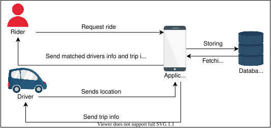
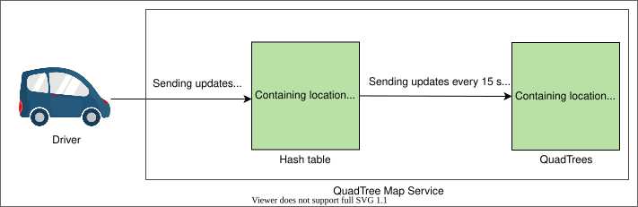
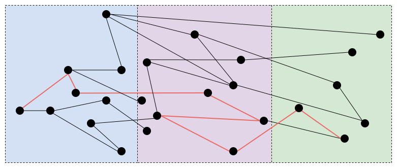
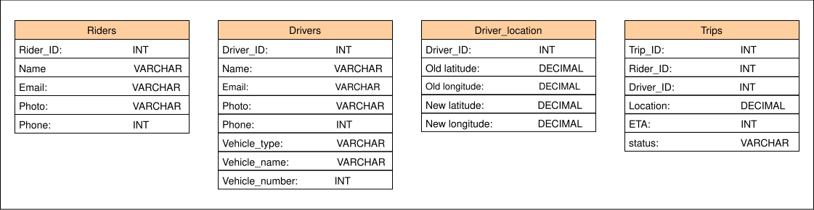
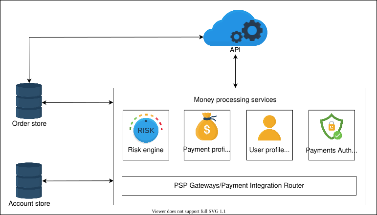
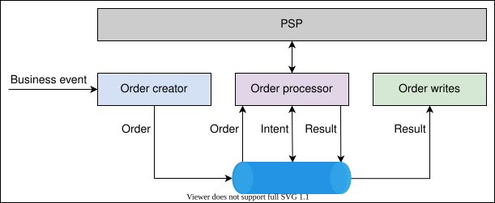

30. Design Uber
System Design: Uber
System Design: Uber
Learn about the basics of designing an Uber service.
We'll cover the following
What is Uber?#
Uber is an application that provides ride-hailing services to its users. Anyone who needs a ride can register and book a vehicle to travel from source to destination. Anyone who has a vehicle can register as a driver and take riders to their destination. Drivers and riders can communicate through the Uber app on their smartphones.
The illustration below shows the number of active users of Uber from the start of 2017 to 2020 (source: Statista):
How will we design Uber?#
There are many unanswered questions regarding Uber. How does it work? How do drivers connect with riders? These are only two of many. This chapter will design a system like Uber and find the answer to such questions.
We’ve divided the design of Uber into six sections:
- Requirements: This lesson will describe the functional and non-functional requirements of a system like Uber. We’ll also estimate the requirements of multiple aspects of Uber, such as storage, bandwidth, and the computation resources.
- High-level Design: We’ll discuss the high-level design of Uber in this lesson. In addition, we’ll also briefly explain the API design of the Uber service.
- Detailed Design: We’ll explore the detailed design of Uber in this lesson. Moreover, we will also discuss the working of different components used in designing Uber.
- Payment Service and Fraud Detection: We’ll learn how the payment system works in Uber design. Moreover, we’ll also discuss how we can catch different frauds related to payments in Uber-like systems.
- Evaluation: This lesson will explain how Uber can fulfill all the non-functional requirements through the proposed design.
- Quiz: We’ll reinforce major concepts of Uber design via a quiz.
Let’s go over the requirements for designing a system like Uber in the next lesson.
Requirements of Uber’s Design
Requirements of Uber’s Design
Learn about the requirements to design an Uber service.
Requirements#
Let’s start with the requirements for designing a system like Uber.
Functional requirements#
The functional requirements of our system are as follows:
-
Update driver location: The driver is a moving entity, so the driver’s location should be automatically updated at regular intervals.
-
Find nearby drivers: The system should find and show the nearby available drivers to the rider.
-
Request a ride: A rider should be able to request a ride, after which the nearest driver should be notified about the rider’s requests.
-
Manage payments: At the start of the trip, the system must initiate the payment process and manage the payments.
-
Show driver estimated time of arrival (ETA): The rider should be able to see the estimated time of arrival of the driver.
-
Confirm pickup: Drivers should be able to confirm that they have picked up the rider.
-
Show trip updates: Once a driver and a rider accept a ride, they should be able to constantly see trip updates like ETA and current location until the trip finishes.
-
End the trip: The driver marks the journey complete upon reaching the destination, and they then become available for the next ride.
Point to Ponder
Question
What if two drivers are at the same distance from the rider? How will we select the driver to whom we’ll send the request?
Non-functional requirements#
The non-functional requirements of our system are as follows:
-
Availability: The system should be highly available. The downtime of even a fraction of a second can result in a trip failure, in the driver being unable to locate the rider, or in the rider being unable to contact the driver.
-
Scalability: The system should be scalable to handle an ever-increasing number of drivers and riders with time.
-
Reliability: The system should provide fast and error-free services. Ride requests and location updates should happen smoothly.
-
Consistency: The system must be strongly consistent. The drivers and riders in an area should have a consistent view of the system.
-
Fraud detection: The system should have the ability to detect any fraudulent activity related to payment.
Resource estimation#
Now, let’s estimate the resources for our design. Let’s assume it has around 500 million riders and about five million drivers. We’ll assume the following numbers for our estimates:
- We have 20 million daily active riders and three million daily active drivers.
- We have 20 million daily trips.
- All active drivers send a notification of their current location every four seconds.
Storage estimation#
Let’s estimate the storage required for our system:
Rider’s metadata#
Let’s assume we need around 1,000 Bytes to store each rider’s information, including ID, name, email, and so on, when the rider registers in our application. To store the 500 million riders, we require 500 GB of storage:
500×106×1000=500 GB
Additionally, if we have around 500,000 new riders registered daily, we’ll need a further 500 MB to store them.
Driver’s metadata#
Let’s assume we need around 1,000 Bytes to store each driver’s information, including ID, name, email, vehicle type, and so on, when the driver registers in our application. To store the five million drivers, we require 5 GB of storage:
5×106×1000=5 GB
Additionally, if we have around 100,00 new drivers registered daily, we’ll need around 100 MB to store them.
Driver location metadata#
Let’s assume we need around 36 Bytes to store the driver’s location updates. If we have five million drivers, we need around 180 MB of storage just for the drivers’ locations.
Trip metadata#
Let’s assume we need around 100 Bytes to store single trip information, including trip ID, rider ID, driver ID, and so on. If we have 20 million daily rides, we need around 2 GB of storage for the trip data.
Let’s calculate the total storage required for Uber in a single day:
Storage Capacity Estimation
| Number of drivers (millions) | 5 |
| Storage required to store a driver's location (Bytes) | 36 |
| Total storage required to store drivers’ locations (MB per day) | f180 |
| Number of trips (millions) | 20 |
| Storage required to store a trip (Bytes) | 100 |
| Total storage required to store trips (GB per day) | f2 |
| Storage required for new riders daily (MB per day) | 500 |
| Storage required for new drivers daily (MB per day) | 100 |
| Total storage (GB per day) | f2.78 |
Note: We can adjust the values in the table to see how the estimations change.
Bandwidth estimation#
We’ll only consider drivers’ location updates and trip data for bandwidth calculation since other factors don’t require significant bandwidth. We have 20 million daily rides, which means we have approximately 232 trips per second.
8640020000000≈232 trips per second
Now, each trip takes around 100 Bytes. So, it takes around 23 KB per second of bandwidth.
232×100 = 23 KB×8 = 185 kbps
As already stated, the driver’s location is updated every four seconds. If we receive the driver’s ID (3 Bytes) and location (16 Bytes), our application will take the following bandwidth:
3M active drivers×(3+16)B=57MB×8 =4 456 =114 Mbps
These bandwidth requirements are modest because we didn’t include bandwidth needs for maps and other components that are present in the real Uber service.
Bandwidth Requirements
| Trips per second | 232 |
| Bandwidth for each trip (Bytes) | 100 |
| Total bandwidth for trips (kilo bits per second) | f185.6 |
| Active drivers (millions) | 3 |
| Bandwidth for each driver (Bytes) | 19 |
| Bandwidth for drivers (Megabits per second) | f114 |
| Total bandwidth (Megabits per second) | f114.19 |
Note: We can adjust the values in the table to see how the requirements change.
We’ve ignored the bandwidth from the Uber service to users because it was very small. More bandwidth will be required for sending map data from the Uber service to users, which we’ve also discussed in the Google Maps chapter.
Number of servers estimation#
We need to handle concurrent requests coming from 20 million daily active users. We’ll use the following formula to estimate a pragmatic number of servers. We established this formula in the Back-of-the-envelope Calculations chapter:
RPS of a serverNumber of daily active users=800020×106=2500

Estimating the Number of Servers
| Daily active users (millions) | 20 |
| RPS of a server | 8000 |
| Number of servers required | f2500 |
Note: We can adjust the values in the table to see how the estimations change.
Building blocks we will use#
The design of Uber utilizes the following building blocks:
- Databases store the metadata of riders, drivers, and trips.
- A cache stores the most requested data for quick responses.
- CDNs are used to effectively deliver content to end users, reducing delay and the burden on end-servers.
- A load balancer distributes the read/write requests among the respective services.
Riders’ and drivers’ devices should have sufficient bandwidth and GPS equipment for smooth navigation with maps.
Note: The information provided in this chapter is inspired by the engineering blog of Uber.
High-level Design of Uber
High-level Design of Uber
Learn how to design an Uber system.
Workflow of our application#
Before diving deep into the design, let’s understand how our application works. The following steps show the workflow of our application:
-
All the nearby drivers except those already serving rides can be seen when the rider starts our application.
-
The rider enters the drop-off location and requests a ride.
-
The application receives the request and finds a suitable driver.
-
Until a matching driver is found, the status will be “Waiting for the driver to respond.”
-
The drivers report their location every four seconds. The application finds the trip information and returns it to the driver.
-
The driver accepts or rejects the request:
-
The driver accepts the request, and status information is modified on both the rider’s and the driver’s applications. The rider finds that they have successfully matched and obtains the driver’s information.
-
The driver refuses the ride request. The rider restarts from step 2 and rematches to another driver.
-
High-level design of Uber#
At a high level, our system should be able to take requests for a ride from the rider and return the matched driver information and trip information to the rider. It also regularly takes the driver’s location. Additionally, it returns the trip and rider information to the driver when the driver is matched to a rider.

API design#
Let’s discuss the design of APIs according to the functionalities we provide. We’ll design APIs to translate our feature set into technical specifications.
We won’t repeat the description of repeating parameters in the following APIs.
Update driver location#
updateDriverLocation(driverID, oldlat, oldlong, newlat, newlong )
Parameter | Description |
| The ID of the driver |
| The previous latitude of the driver |
| The previous longitude of the driver |
| The new latitude of the driver |
| The new longitude of the driver |
The updateDriverLocation API is used to send the driver’s coordinates to the driver location servers. This is where the location of the driver is updated and communicated to the riders.
Find nearby drivers#
findNearbyDrivers(riderID, lat, long)
Parameter | Description |
| The ID of the rider |
| The latitude of the rider |
| The longitude of the rider |
The findNearbyDrivers API is used to send the location of the rider for whom we want to find the nearby drivers.
Request a ride#
requestRide(riderID, lat, long, dropOfflat,dropOfflong, typeOfVehicle)
Parameter | Description |
| The current latitude of the rider |
| The current longitude of the rider |
| The latitude of the rider’s drop-off location |
| The longitude of the rider’s drop-off location |
| The type of vehicle required by the rider—for example, business, economy, and so on. |
The requestRide API is used to send the location of the rider and the type of vehicle the rider needs.
Show driver ETA#
showETA(driverID, eta)
Parameter | Description |
| The estimated time of arrival of the driver |
The showEta API is used to show the estimated time of arrival to the rider.
Confirm pickup#
confirmPickup(driverID, riderID, timestamp)
Parameter | Description |
| The time at which the driver picked up the rider |
The confirmPickup API is used to determine when the driver has picked up the rider.
Show trip updates#
showTripUpdates(tripID, riderID, driverID, driverlat, driverlong, time_elapsed, time_remaining)
Parameter | Description |
| The ID of the trip |
| The latitude of the driver |
| The longitude of the driver |
| The total time of the trip |
| The time remaining (extract the current time from the ETA) to reach the destination |
The showTripUpdates API is used to show the updates of the trip, including the position of the driver and the time remaining to reach the destination.
End the trip#
endTrip(tripID, riderID, driverID ,time_elapsed, lat, long)
The endTrip API is used to end the trip.
Detailed Design of Uber
Detailed Design of Uber
Learn about the detailed design of the Uber system.
Let’s look at the detailed design of our Uber system and learn how the various components work together to offer a functioning service:

Components#
Let’s discuss the components of our Uber system design in detail.
Location manager#
The riders and drivers are connected to the location manager service. This service shows the nearby drivers to the riders when they open the application. This service also receives location updates from the drivers every four seconds. The location of drivers is then communicated to the quadtree map service to determine which segment the driver belongs to on a map. The location manager saves the last location of all drivers in a database and saves the route followed by the drivers on a trip.
Quadtree map service#
The quadtree map service updates the location of the drivers. The main problem is how we deal with finding nearby drivers efficiently.
We’ll modify the solution discussed in the Yelp chapter according to our requirements. We used quadtrees on Yelp to find the location. Quadtrees help to divide the map into segments. If the number of drivers exceeds a certain limit, for example, 500, then we split that segment into four more child nodes and divide the drivers into them.
Each leaf node in quadtrees contains segments that can’t be divided further. We can use the same quadtrees for finding the drivers. The most significant difference we have now is that our quadtree wasn’t designed with regular upgrades in consideration. So, we have the following issues with our dynamic segment solution.
We must update our data structures to point out that all active drivers update their location every four seconds. It takes a longer amount of time to modify the quadtree whenever a driver’s position changes. To identify the driver’s new location, we must first find a proper grid depending on the driver’s previous position. If the new location doesn’t match the current grid, we should remove the driver from the current grid and shift it to the correct grid. We have to repartition the new grid if it exceeds the driver limit, which is the number of drivers for each region that we set initially. Furthermore, our platform must tell both the driver and the rider, of the car’s current location while the ride is in progress.
To overcome the above problem, we can use a hash table to store the latest position of the drivers and update our quadtree occasionally, say after 10–15 seconds. We can update the driver’s location in the quadtree around every 15 seconds instead of four seconds, and we use a hash table that updates every four seconds and reflects the drivers’ latest location. By doing this, we use fewer resources and time.

Request vehicle#
The rider contacts the request vehicle service to request a ride. The rider adds the drop-off location here. The request vehicle service then communicates with the find driver service to book a vehicle and get the details of the vehicle using the location manager service.
Find driver#
The find driver service finds the driver who can complete the trip. It sends the information of the selected driver and the trip information back to the request vehicle service to communicate the details to the rider. The find driver service also contacts the trip manager to manage the trip information.
Trip manager#
The trip manager service manages all the trip-related tasks. It creates a trip in the database and stores all the information of the trip in the database.
ETA service#
The ETA service deals with the estimated time of arrival. It shows riders the pickup ETA when their trip is scheduled. This service considers factors such as route and traffic. The two basic components of predicting an ETA given an origin and destination on a road network are the following:
- Calculate the shortest route from origin to destination.
- Compute the time required to travel the route.
The whole road network is represented as a graph. Intersections are represented by nodes, while edges represent road segments. The graph also depicts one-way streets, turn limitations, and speed limits.
To identify the shortest path between source and destination, we can utilize routing algorithms such as Dijkstra’s algorithm. However, Dijkstra, or any other algorithm that operates on top of an unprocessed graph, is quite slow for such a system. Therefore, this method is impractical at the scale at which these ride-hailing platforms operate.
To resolve these issues, we can split the whole graph into partitions. We preprocess the optimum path inside partitions using contraction hierarchies and deal with just the partition boundaries. This strategy can considerably reduce the time complexity since it partitions the graph into layers of tiny cells that are largely independent of one another. The preprocessing stage is executed in parallel in the partitions when necessary to increase speed. In the illustration below, all the partitions process the best route in parallel. For example, if each partition takes one second to find the path, we can have the complete path in one second since all partitions work in parallel.

Once we determine the best route, we calculate the expected time to travel the road segment while accounting for traffic. The traffic data will be the edge weights between the nodes.
DeepETA#
We use a machine learning component named DeepETA to deliver an immediate improvement to metrics in production. It establishes a model foundation that can be reused for multiple consumer use cases.
We also use a routing engine that uses real-time traffic information and map data to predict an ETA to traverse the best path between the source and the destination. We use a post-processing ML model that considers spatial and temporal parameters, such as the source, destination, time of the request, and knowledge about real-time traffic, to forecast the ETA residual.

Database#
Let’s select the database according to our requirements:
- The database must be able to scale horizontally. There are new customers and drivers on a regular basis, so we should be able to add more storage without any problems.
- The database should handle a large number of reads and writes because the location of drivers is updated every four seconds.
- Our system should never be down.
We’ve already discussed the various database types and their specifications in the Database chapter. So, according to our understanding and requirements (high availability, high scalability, and fault tolerance), we can use Cassandra to store the driver’s last known location and the trip information after the trip has been completed, and there will be no updates to it.
We can use a MySQL database to store trip information while it’s in progress. We use MySQL for in-progress trips for frequent updates since the trip information is relational, and it needs to be consistent across tables. We use Cassandra because the data we store is enormous and it increases continuously.
Note: Recently, Uber migrated their data storage to Google Cloud Spanner. It provides global transactions, strongly consistent reads, and automatic multisite replication and failover features.
Points to Ponder
Question 1
Why haven’t we used only the MySQL database?
1 of 2
Storage schema#
On a basic level in the Uber application, we need the following tables:
-
Riders: We store the rider’s related information, such as ID, name, email, photo, phone number, and so on.
-
Drivers: We store the driver’s related information, such as ID, name, email, photo, phone number, vehicle name, vehicle type, and so on.
-
Driver_location: We store the driver’s last known location.
-
Trips: We store the trip’s related information, such as trip ID, rider ID, driver ID, status, ETA, location of the vehicle, and so on.
The following illustration visualizes the data model:

Fault tolerance#
For availability, we need to have replicas of our database. We use the primary-secondary replication model. We have one primary database and a few secondary databases. We synchronously replicate data from primary to secondary databases. Whenever our primary database is down, we can use a secondary database as a primary one.
Point to Ponder
Question
How will we handle a driver’s slow and disconnecting network?
Load balancers#
We use load balancers between clients (drivers and riders) and the application servers to uniformly distribute the load among the servers. The requests are routed to the specified server that provides the requested service.
Cache#
A million drivers need to send the updated location every four seconds. A million requests to the quadtree service affects how well it works. For this, we first store the updated location in the hash table stored in Redis. Eventually, these values are copied into the persistent storage every 10–15 seconds.
We’ve discussed the detailed design of Uber and how different components work together to fulfill the requirements. In the next lesson, we’ll learn how the payment service works to move the money from riders to drivers and detect frauds.
Payment Service and Fraud Detection in Uber Design
Payment Service and Fraud Detection in Uber Design
Learn how the payment service of Uber works and how they deal with payment fraud.
We'll cover the following
Our goal in this lesson is to highlight the need to secure the system against malicious activities. We’ll discuss fraudulent activities in the context of payment. We’ll first briefly go through how the payment system works, and then we’ll cover how to guard our system against malicious activity.
The payment service deals with the payments side of the Uber application. It includes collecting payment from the rider to give it to the driver. As the trip completes, it collects the trip information, calculates the cost of the journey, and initiates the payment process.
Major functionality#
The Uber payments platform includes the following functionality:
- New payment options: It adds new payment options for users.
- Authorization: It authorizes the payments for transactions.
- Refund: It refunds a payment that was authorized before.
- Charging: It moves money from a user account to Uber.
What to prevent#
We need to prevent the following scenarios for the success of the payment system:
- Lack of payment
- Duplicate payments
- Incorrect payment
- Incorrect currency conversion
- Dangling authorization
The Uber payment platform is based on the double-entry bookkeeping method.
Design#
Let’s look at the design of the payment platform in Uber and learn how different components work together to complete the transactions:

The key components used in the payment service are as follows:
- API: The Uber API is used to access the payment service.
- Order store: This stores all the orders. Orders collect payments and contain information regarding money flow between different riders and drivers.
- Account store: This stores all the accounts of riders and drivers.
- Risk engine: The risk engine analyzes different risks involved in collecting payment from a particular rider. It checks the history of the rider—for example, the rating of the rider, if the rider has sufficient funds in their rider account, any pending dues, if the rider cancels the rides frequently, and so on.
- Payment profile service: This provides information on the payment mechanisms, such as credit and debit cards.
- User profile service: This provides information regarding users’ payments.
- Payment authorization service: This offers payment authentication services.
- PSP gateways: This connects with payment service providers
Workflow#
The following steps show the workflow of the payment service:
- When a rider requests a ride, the Uber application uses the Uber API to request the risk engine to check the risks involved.
- The risk engine obtains user information from the user profile service and evaluates the risk involved.
- If the risks are high, the rider’s request isn’t entertained.
- If the risks are low, the risk engine creates an authorization token and sends it to the payment profile service (for record-keeping), which fetches that token and sends it to the payment authorization service.
- The payment authorization service sends that request to the PSP gateway, which contacts the service provider for authorization.
- The PSP gateway sends the authorization token back to the payment authorization service, which sends the token back to the Uber application that the trip request is approved.
- After the trip is completed, the Uber application uses the API to send the payment request to the PSP gateway with authorization data.
- The PSP gateway contacts the service provider and sends the status back to the Uber application through the API.
The Uber payment service is constructed with a set of microservices grouped together as a stream-processing architecture.
Apache Kafka#
Kafka is an open-source stream-processing software platform. It’s the primary technology used in payment services. Let’s see how Kafka helps to process an order:

The order creator gets a business event—for example, the trip is finished. The order creator creates the money movement information and the metadata. This order creator publishes that information to Kafka. Kafka processes that order and sends it to the order processor. The order processor then takes that information from Kafka, processes it, and sends it as intent to Kafka. From that, the order processor again processes and contacts the PSP. The order processor then takes the answer from PSP and transmits it to Kafka as a result. The result is then saved by the order writer.
The key capabilities of Kafka that the payment service uses are the following:
-
It works like message queues to publish and subscribe to message queues.
-
It stores the records in a way that is fault tolerant.
-
It processes the payment records asynchronously.
Fraud detection#
Fraud detection is a critical operational component of our design. Payment fraud losses are calculated as a percentage of gross amounts. Despite fraud activities accounting for a tiny portion of gross bookings, these losses considerably influence earnings. Moreover, if malicious behavior isn’t promptly detected and handled, it may be further leveraged, which results in significant losses for the business. Earlier, we discussed the risk engine that detects fraud before the trip starts. Here, we’ll focus on the fraud detection that happens during trips or at the end of the trips.
Fraud detection is challenging because many instances of fraud are like detecting zero-day security bugs. Therefore, our system needs intelligence to detect anomalies, and it also needs accountability for automated decisions in the form of human-led audits.
The activities that are considered fraudulent by Uber are as follows:
-
A driver deliberately increases the time or distance of a trip in a dishonest manner—for example, if they take a much longer route than necessary to the rider’s destination.
-
A driver manipulates the GPS data or uses fake location GPS apps.
-
A driver confirms trips with no intention of completing them, forcing riders to cancel.
-
A driver creates false driver or rider accounts for fraudulent purposes.
-
A driver provides incorrect or inaccurate information about themselves when opening their account.
-
A driver drives a vehicle that hasn’t been approved by Uber.
-
A driver claims fraudulent fees or charges, such as unwarranted cleaning fees.
-
A driver willfully confirms or completes fraudulent trips.
RADAR#
Uber introduced RADAR, a human-assisted AI fraud detection and mitigation solution to handle the discussed scenarios of fraud. The RADAR system detects fraud by analyzing the activity time series of the payment system. It then generates a rule for it and stops it from further processing. This proactive approach can help to detect unseen fraud in real time. This detection model also uses human knowledge for continuous improvements. Here, we’ll briefly discuss how RADAR works:
RADAR recognizes the beginning of a fraud attempt and creates a rule to prevent it. The fraud analyst is involved in the next step. They review the rule and approve or reject it if required. They then send feedback (approved or not approved) to the protection system. The feedback is also sent to the fraud detection system by the fraud analysts to improve detection.
Furthermore, the system examines the data in the following time dimensions:
-
It examines the trip time when a trip has been completed. Multiple factors are involved in real-time trip monitoring. For instance, the system can check whether or not the driver and rider locations are the same. The system can also monitor the speed and analyze the real traffic to check if the driver is intentionally driving slow or if there’s traffic congestion.
-
Payment settlement time refers to obtaining payment processing data. It might take days or weeks to settle.
We’ve just discussed the basic details of how guarding against malicious activity at scale is necessary for the success of a business. In the proposed model, the human experts are involved, potentially decreasing the scalability of the system. Research is being carried out on how to ensure that the decisions made by the AI system are fair and ethical.
Evaluation of Uber’s Design
Evaluation of Uber’s Design
Let's evaluate our design for the non-functional requirements.
Fulfill non-functional requirements#
Let’s evaluate how our system fulfills the non-functional requirements.
Availability#
Our system is highly available. We used WebSocket servers. If a user gets disconnected, the session is recreated via a load balancer with a different server. We’ve used multiple replicas of our databases with a primary-secondary replication model. We have the Cassandra database, which provides highly available services and no single point of failure. We used a CDN, cache, and load balancers, which increase the availability of our system.
Scalability#
Our system is highly scalable. We used many independent services so that we can scale these services horizontally, independent of each other as per our needs. We used quadtrees for searching by dividing the map into smaller segments, which shortens our search space. We used a CDN, which increases the capacity to handle more users. We also used a NoSQL database, Cassandra, which is horizontally scalable. Additionally, we used load balancers, which improve speed by distributing read workload among different servers.
Reliability#
Our system is highly reliable. The trip can continue even if the rider’s or driver’s connection is broken. This is achieved by using their phones as local storage. The use of multiple WebSocket servers ensures smooth, nearly real-time operations. If any of the servers fail, the user is able to reconnect with another server. We also used redundant copies of the servers and databases to ensure that there’s no single point of failure. Our services are decoupled and isolated, which eventually increases the reliability. Load balancers help move the requests away from any failed servers to healthy ones.
Consistency#
We used storage like MySQL to keep our data consistent globally. Moreover, our system does synchronous replication to achieve strong consistency. Because of a limited number of data writers and viewers for a trip (rider, driver, some internal services), the usage of traditional databases doesn’t become a bottleneck. Also, data sharding is easier in this scenario.
Fraud detection#
Our system is able to detect any fraudulent activity related to payment. We used the RADAR system to detect any suspicious activity. RADAR recognizes the beginning of a fraud attempt and creates a rule to prevent it.
Requirements | Techniques |
Availability |
|
Scalability |
|
Reliability |
|
Consistency |
|
Fraud detection |
|
Conclusion#
This chapter taught us how to design a ride-hailing service like Uber. We discussed its functional and non-functional requirements. We learned how to efficiently locate drivers on the map using quadtrees. We also discussed how to efficiently calculate the estimated time of arrival using routing algorithms and machine learning. Additionally, we learned that guarding our service against fraudulent activities is important for the business’s success.
Quiz on Uber's Design
Quiz on Uber's Design
Test your understanding of the Uber design.
(Select all that apply.) Which factors can help optimize the ETA at the start of the trip to lower the cost and duration of the trip?
A)
Real-time traffic detail
B)
Distance of a driver before the trip starts
C)
Professional driver
D)
Speed of vehicle